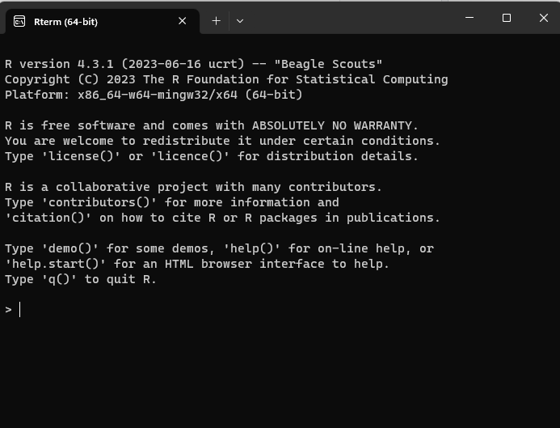
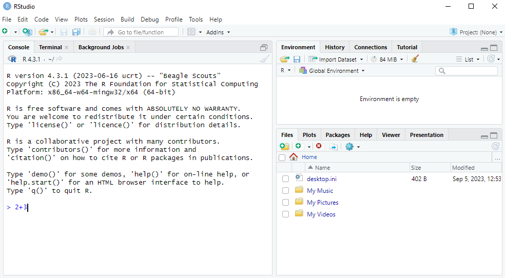
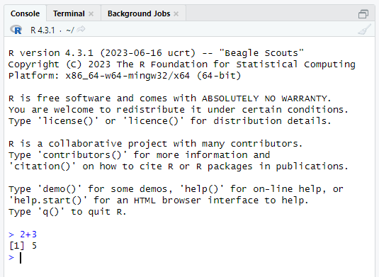
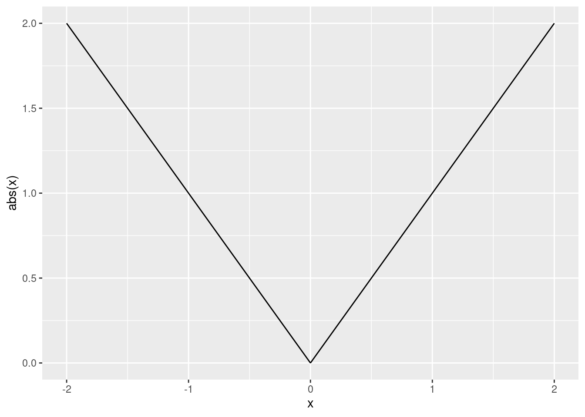
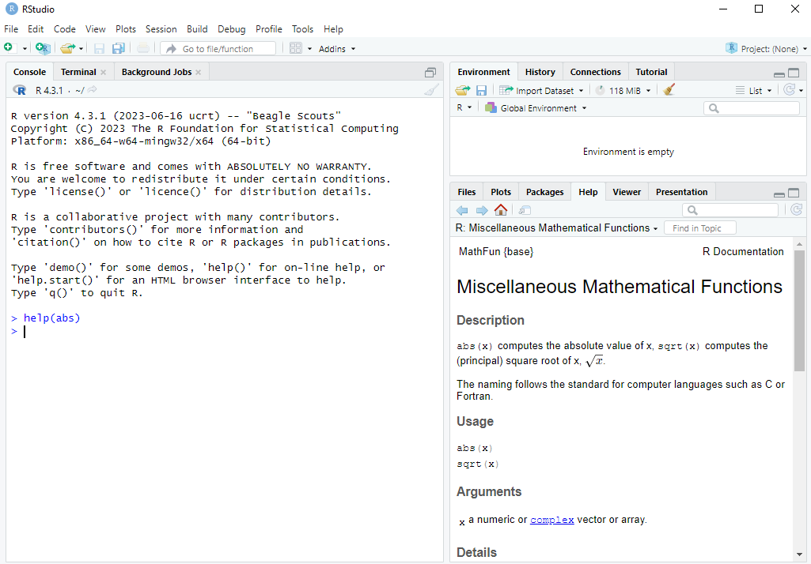
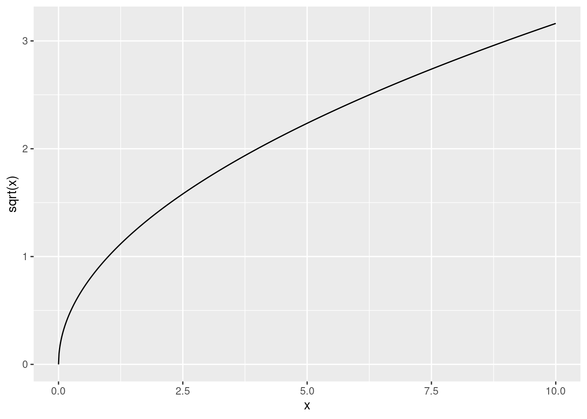
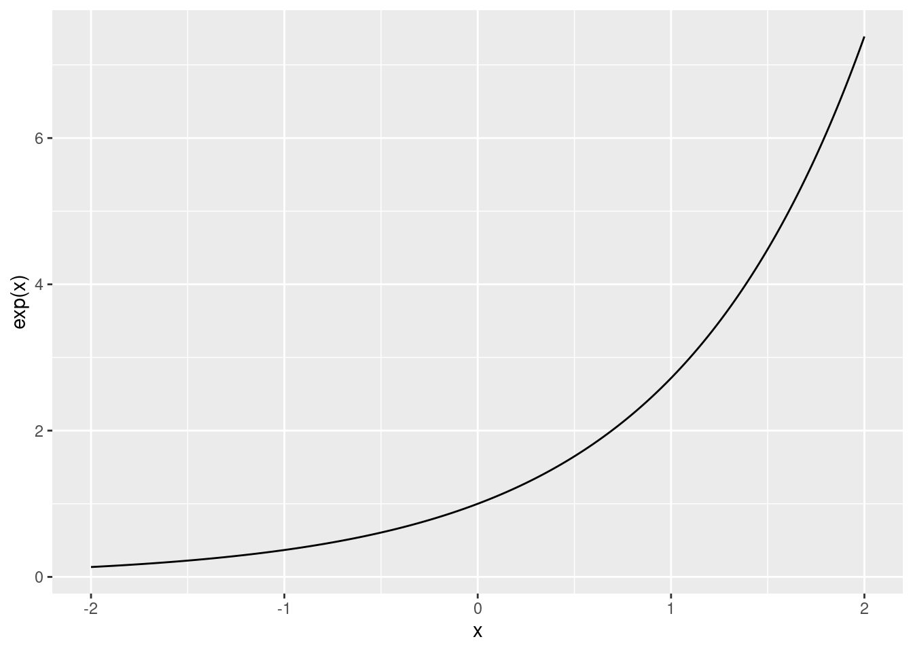
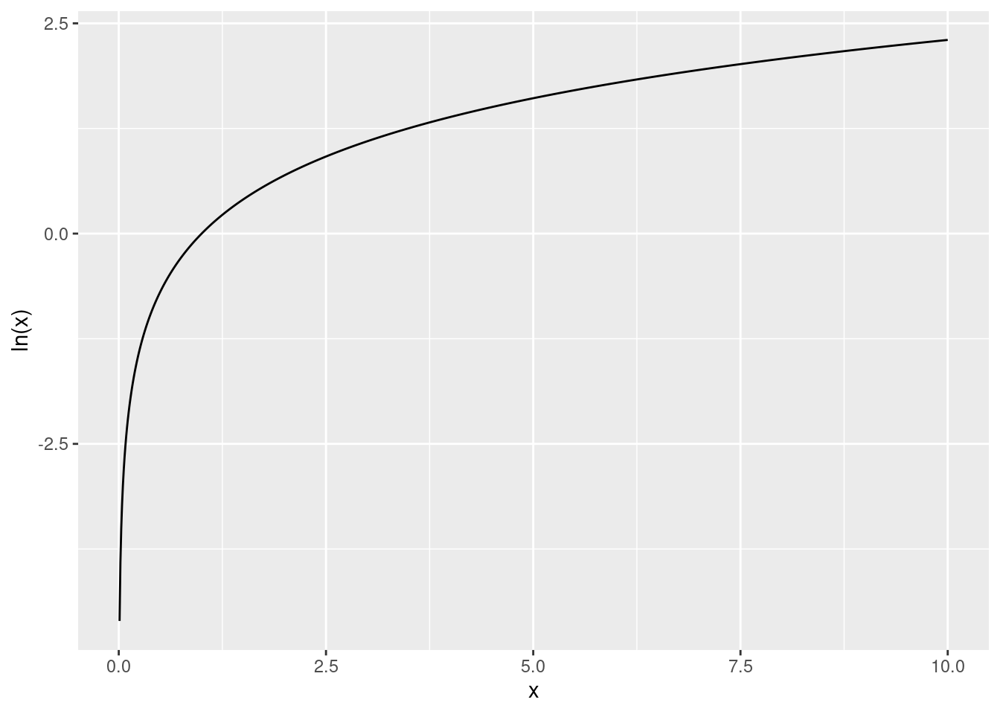

2 + 3[1] 5
In this chapter we will learn how to use R as a calculator.
The R console is where you provide commands in the R programming language to be executed by the computer. It is possible to access the R console without RStudio using a very basic command-line interface that looks like this:1

However, RStudio also has this R console, as well as many other useful features. Therefore we will stick to using R within RStudio for the rest of this course.
Let’s learn how to do a very basic calculation in R. If we want to calculate 2+3, we simply go to the Console tab in RStudio and type 2+3, just like in the screenshot below:

We then press Enter to see the answer. What we will see then is R giving the following output:

The [1] before the 5 here essentially means the 5 is the first number in the output. This is obvious here, but this feature will be more useful later when we do operations on more numbers. But for now, we can just ignore the [1].
In this book, I won’t always show screenshots like this. Instead I will show code snippets in boxes like this:
2 + 3[1] 5The part that is code will be in color and the output will be in a separate gray box below it. In these code boxes there is a small clipboard icon on the right which you can use to copy the code to be able to experiment with it in RStudio yourself. This will be useful when we start writing longer commands and programs.
We will now go through some different operations. We will also learn about functions and their arguments along the way, which we will be be using again and again throughout the rest of this course.
Addition, subtraction, multiplication and division are given by the standard +, -, * and / operators that you would use in other programs like Excel, or even in an internet search engine. For example:
2 + 3[1] 55 - 3[1] 22 * 3[1] 63 / 2[1] 1.5It is also possible to do multiple operations at the same time using parentheses. For example, suppose we wanted to calculate: \frac{2+4}{4\times 2} = \frac{6}{8} = 0.75 We can calculate this in R as follows:
(2 + 4) / (4 * 2)[1] 0.75Suppose by accident you left out the closing parentheses and you see the following:
> (2 + 4) / (4 * 2
+R didn’t run the command, but it also didn’t give an Error. What happened is that Enter moved to a new line instead of executing the command. Essentially R is waiting for you to finish the command by closing the parentheses. If you want to “Escape” such a situation, you just need to press the Esc button. In general, if anything strange happens in R and you get stuck, you can always press the Esc button to return to “normal”.
In mathematics notation x^n means we multiply x by itself n times. For example, 2^3=2\times 2\times 2 = 8. In R we use the ^ operator to do this:
2^3[1] 8Taking the absolute value turns a negative number into the same number without a minus sign. It has no effect on positive numbers.
In mathematics notation we write |x| for the absolute value of x. The formal definition is:
|x| = \begin{cases} x & \text{ if } x \geq 0 \\ -x & \text{ otherwise} \end{cases}
Here are some examples:
This is what the function looks like when we plot it for different x:
if (!require(ggplot2)) install.packages("ggplot2")
library(ggplot2)
x <- seq(-2, 2, length.out = 1000)
ggplot(data.frame(x, y = abs(x)), aes(x, y)) +
geom_line() +
ylab("abs(x)")
We’ll learn how to make plots like this later in Chapter 16.
In R we can calculate these with:
abs(-2)[1] 2abs(3)[1] 3Taking the absolute value in R involves using what is called a function. Functions are used by calling their names and giving the arguments to the function in parentheses. When we do abs(-2), abs is the name of the function and -2 is the argument.
In many ways the functions in R work a lot like the functions in Excel, just they might have different names or be used a bit differently. For example, in Excel you write =ABS(-2) to take the absolute value of -2. The argument is the same, and the function name only differs in that in Excel you need to use capital letters whereas in R you use lowercase letters (in addition, Excel requires you to put an = before the function name).
When using functions it is helpful to read their help pages. You can look at this by typing help(abs) or ?abs in the Console and pressing Enter. The help page then pops up in the Help tab, like in the screenshot below:

absWe can see that it says abs(x) computes the absolute value of x. So we are told that x is the argument.
We will be using many different functions and it’s a good habit of to look at their help pages. The help pages will also be available to you in the exam.
The square root of a number x is the y that solves y^2=x. For example, if x=4, both y=-2 and y=2 solve this. The principal square root is the positive y from this.
Here is what the square root function looks like for different x:
if (!require(ggplot2)) install.packages("ggplot2")
library(ggplot2)
x <- seq(0, 10, length.out = 1000)
ggplot(data.frame(x, y = sqrt(x)), aes(x, y)) +
geom_line() +
ylab("sqrt(x)")
We take the principal square root in R using the sqrt() function:
sqrt(9)[1] 3It is also possible to take a square root by exponentiating a number by \frac{1}{2}:
9^(1/2)[1] 3With this approach we can also take the cubed root of a number: \sqrt[3]{8}=8^\frac{1}{3}=2:
8^(1/3)[1] 2A very important function in mathematics and statistics is the exponential function. The definition of \exp\left(x\right), or e^x, is given by: e^x = \underset{n\rightarrow \infty}{\lim} \left(1 + \frac{x}{n}\right)^n
Note: you don’t need to know or remember this definition for the exam. You only need to know how to use the exponential function in R.
This is what the function looks like:
if (!require(ggplot2)) install.packages("ggplot2")
library(ggplot2)
x <- seq(-2, 2, length.out = 1000)
ggplot(data.frame(x, y = exp(x)), aes(x, y)) +
geom_line() +
ylab("exp(x)")
In R we can use the exp() function to calculate the exponential of any number:
exp(1)[1] 2.718282Another common mathematical function is the logarithm, which is like the reverse of exponentiation.
The log of a number x to a base b, denoted \log_b\left(x\right), is the number of times we need to multiply b by itself to get x. For example, \log_{10}\left(100\right) = 2, because 10\times 10=100. We need to multiply the base b=10 by itself twice to get to x=100.
A special logarithm is the natural logarithm, \log_e(x), which is the logarithm to the base \exp(1)=e^1\approx 2.7183. This is also written as \ln(x).
This is what the function looks like:
if (!require(ggplot2)) install.packages("ggplot2")
library(ggplot2)
x <- seq(0.01, 10, length.out = 1000)
ggplot(data.frame(x, y = log(x)), aes(x, y)) +
geom_line() +
ylab("ln(x)")
In R we use the log() function to calculate the natural logarithm:
log(1)[1] 0What if we want to calculate the logarithm to a base other than e? If we look at the help page for log() using help(log) or ?log we can see that the log function has 2 arguments:
x: the number we want to take the log of.base: “the base with respect to which the logarithms are computed. Defaults to e=exp(1)”.This is the first time that we have seen a function with more than one argument. Earlier when we used the log() function to calculate the natural logarithm we only used one argument because we used the default setting for the base. But when we want to use a base other than e, we need to specify it.
How we calculate \log_{10}\left(100\right) in R is as follows:
log(100, base = 10)[1] 2We write both arguments into the log() function, separated by commas.
This is just like how we used functions with more than one argument in Excel, for example the VLOOKUP function. We separated the arguments there by commas as well.
On Windows you can access this by going to C:\Program Files\R\R-4.3.1\bin (replacing 4.3.1 with your version number) and running the file R.exe. On Mac or Linux you can go to the terminal and type R and Enter.↩︎